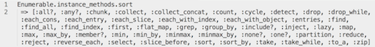
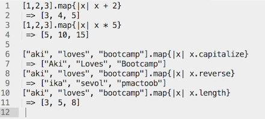

Enumerable Methods in Ruby
Apr 5th, 2014
Dealing with arrays is a common task in programming, and taking a moment to talk about Enumerables.
In Ruby, Enumerable provides many instance methods to help in making manipulating arrays less cumbersome. For a good way to look up what kind of methods there are, the command Enumerable.instance_methods.sort works like a charm. This is a great place to start when dealing with an unfamiliar set of methods:
Of the many Enumerable methods available, I find that Enumerable#map is really useful as it allows for alteration of each element in array in one relatively easy-to-read command. The example below shows how an array or integers or strings can be altered with map. The method can apply a modification to each element in an array and return the result, which can be very powerful to manage big data collections. 
The map method can also be used for a destructive operation to alter the original input array. This is done by adding a "!", so by using ".map!" instead of "map".